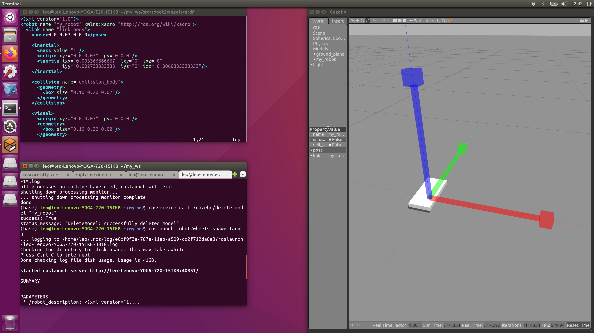
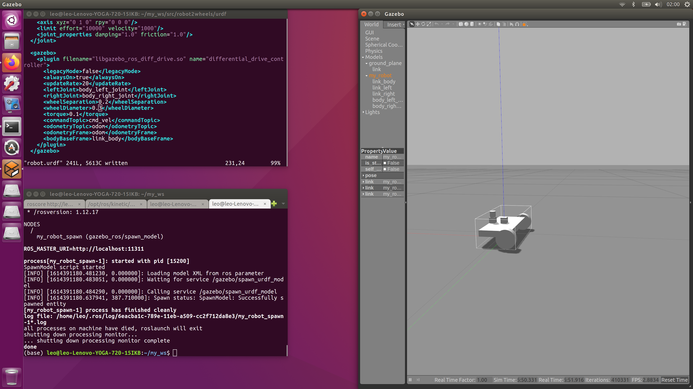

ROS 2 Wheels Robot
- Create package.
- Initialize the world.
- Tune the model by spawn and reset, calculate the inertia as well, (red:x, green: y, blue: z)
- The following is the final robot model, (however this is an unbalanced model, it cannot move smoothly)
- Run simulation,
catkin_create_pkg robot2wheels urdf sensor_msgs cv_bridge rospy std_msgs rviz controller_manager gazebo_ros joint_state_publisher robot_state_publisher
cd robot2wheels
mkdir launch urdf
roscore
roslaunch gazebo_ros empty_world.launch
roslaunch robot2wheels spawn.launch
rosservice call /gazebo/delete_model "my_robot"
rosrun calculator inertia_calculator.py


roslaunch robot2wheels spawn.launch
roslaunch robot2wheels rviz.launch # please add robotmodel and camera
rostopic pub /cmd_vel geometry_msgs/Twist "linear: x: -1.0 y: 0.0 z: 0.0 angular: x: -1.0 y: 0.0 z: 0.0"
robot.urdf
<?xml version="1.0"?>
<robot name="my_robot" xmlns:xacro="http://ros.org/wiki/xacro">
<xacro:property name="M_PI" value="3.1415926535897931" />
<link name="link_body">
<pose>0 0 0.03 0 0 0</pose>
<inertial>
<mass value="5"/>
<origin xyz="0 0 0.03" rpy="0 0 0"/>
<inertia ixx="0.016833333333" ixy="0" ixz="0"
iyy="0.004333333334" iyz="0" izz="0.020833333333"/>
</inertial>
<collision name="collision_body">
<geometry>
<box size="0.10 0.20 0.02"/>
</geometry>
</collision>
<visual>
<origin xyz="0 0 0.03" rpy="0 0 0"/>
<geometry>
<box size="0.10 0.20 0.02"/>
</geometry>
</visual>
<collision name="collision_caster">
<origin xyz="0.025 0 0" rpy="0 0 0"/>
<geometry>
<sphere radius="0.01"/>
</geometry>
<surface>
<friction>
<ode>
<mu>0</mu>
<mu2>0</mu2>
<slip1>1.0</slip1>
<slip2>1.0</slip2>
</ode>
</friction>
</surface>
</collision>
<visual name="visual_caster">
<origin xyz="0.025 0 0.008" rpy="0 0 0"/>
<geometry>
<sphere radius="0.017"/>
</geometry>
</visual>
</link>
<link name="link_camera">
<inertial>
<mass value="0.05"/>
<origin xyz="0 0 0.05" rpy="0 0 0"/>
<inertia ixx="0.000003333333" ixy="0" ixz="0"
iyy="0.0000033333333" iyz="0" izz="0.00000333333333"/>
</inertial>
<collision name="collision_camera">
<geometry>
<box size="0.02 0.02 0.02"/>
</geometry>
</collision>
<visual>
<origin xyz="0 0 0.05" rpy="0 0 0"/>
<geometry>
<box size="0.02 0.02 0.02"/>
</geometry>
</visual>
</link>
<link name="link_laser">
<inertial>
<mass value="0.05"/>
<origin xyz="0 0 0.07" rpy="0 0 0"/>
<inertia ixx="0.000002916666667" ixy="0" ixz="0"
iyy="0.000002916666667" iyz="0" izz="0.0000025"/>
</inertial>
<collision name="collision_laser">
<geometry>
<cylinder length="0.02" radius="0.01"/>
</geometry>
</collision>
<visual>
<origin xyz="0 0 0.07" rpy="0 0 0"/>
<geometry>
<cylinder length="0.02" radius="0.01"/>
</geometry>
</visual>
</link>
<link name="link_imu">
<inertial>
<mass value="0.05"/>
<origin xyz="0 0 0.05" rpy="0 0 0"/>
<inertia ixx="0.000003333333" ixy="0" ixz="0"
iyy="0.000003333333" iyz="0" izz="0.00000333333333"/>
</inertial>
<collision name="collision_imu">
<geometry>
<box size="0.02 0.02 0.02"/>
</geometry>
</collision>
<visual>
<origin xyz="0 0 0.05" rpy="0 0 0"/>
<geometry>
<box size="0.02 0.02 0.02"/>
</geometry>
</visual>
</link>
<link name="link_left">
<inertial>
<mass value="1"/>
<origin xyz="-0.02 0.1 0.02" rpy="0 1.5707 1.5707"/>
<inertia ixx="0.0002583333334" ixy="0" ixz="0"
iyy="0.0002583333334" iyz="0" izz="0.00045"/>
</inertial>
<collision name="collision_left">
<geometry>
<cylinder length="0.02" radius="0.03"/>
</geometry>
</collision>
<visual>
<origin xyz="-0.02 0.1 0.02" rpy="0 1.5707 1.5707"/>
<geometry>
<cylinder length="0.02" radius="0.03"/>
</geometry>
</visual>
</link>
<link name="link_right">
<inertial>
<mass value="1"/>
<origin xyz="-0.02 -0.1 0.02" rpy="0 1.5707 1.5707"/>
<inertia ixx="0.0002583333334" ixy="0" ixz="0"
iyy="0.0002583333334" iyz="0" izz="0.00045"/>
</inertial>
<collision name="collision_left">
<geometry>
<cylinder length="0.02" radius="0.03"/>
</geometry>
</collision>
<visual>
<origin xyz="-0.02 -0.1 0.02" rpy="0 1.5707 1.5707"/>
<geometry>
<cylinder length="0.02" radius="0.03"/>
</geometry>
</visual>
</link>
<joint type="fixed" name="body_camera_joint">
<origin xyz="0.04 0 0.00" rpy="0 0 0"/>
<child link="link_camera"/>
<parent link="link_body"/>
<axis xyz="0 0 0"/>
</joint>
<joint type="fixed" name="camera_laser_joint">
<origin xyz="0.00 0 0.000" rpy="0 0 0"/>
<child link="link_laser"/>
<parent link="link_camera"/>
<axis xyz="0 0 0"/>
</joint>
<joint type="fixed" name="body_imu_joint">
<origin xyz="0 0 0.00" rpy="0 0 0"/>
<child link="link_imu"/>
<parent link="link_body"/>
<axis xyz="0 0 0"/>
</joint>
<joint type="continuous" name="body_left_joint">
<origin xyz="-0.02 0.01 0.00" rpy="0 0 0"/>
<child link="link_left"/>
<parent link="link_body"/>
<axis xyz="0 1 0" rpy="0 0 0"/>
<limit effort="10000" velocity="1000"/>
<joint_properties damping="1.0" friction="1.0"/>
</joint>
<joint type="continuous" name="body_right_joint">
<origin xyz="-0.02 -0.01 0.00" rpy="0 0 0"/>
<child link="link_right"/>
<parent link="link_body"/>
<axis xyz="0 1 0" rpy="0 0 0"/>
<limit effort="10000" velocity="1000"/>
<joint_properties damping="1.0" friction="1.0"/>
</joint>
<gazebo>
<plugin filename="libgazebo_ros_diff_drive.so" name="differential_drive_controller">
<legacyMode>false</legacyMode>
<alwaysOn>true</alwaysOn>
<updateRate>20</updateRate>
<leftJoint>body_left_joint</leftJoint>
<rightJoint>body_right_joint</rightJoint>
<wheelSeparation>0.2</wheelSeparation>
<wheelDiameter>0.3</wheelDiameter>
<torque>0.1</torque>
<commandTopic>cmd_vel</commandTopic>
<odometryTopic>odom</odometryTopic>
<odometryFrame>odom</odometryFrame>
<bodyBaseFrame>link_body</bodyBaseFrame>
</plugin>
</gazebo>
<gazebo reference="link_camera">
<sensor type="camera" name="camera_camera_sensor">
<update_rate>30.0</update_rate>
<camera>
<pose>0.035 0 0.078 0 0 0</pose>
<horizontal_fov>${85 * M_PI/180.0}</horizontal_fov>
<image>
<format>R8G8B8</format>
<width>1020</width>
<height>1020</height>
</image>
<clip>
<near>0.01</near>
<far>1000</far>
</clip>
</camera>
<plugin name="camera_camera_controller" filename="libgazebo_ros_camera.so">
<alwaysOn>true</alwaysOn>
<updateRate>0.0</updateRate>
<cameraName>arm_sensor/camera</cameraName>
<imageTopicName>image_raw</imageTopicName>
<cameraInfoTopicName>camera_info</cameraInfoTopicName>
<frameName>link_camera</frameName>
<hackBaseline>0.07</hackBaseline>
<distortionK1>0.0</distortionK1>
<distortionK2>0.0</distortionK2>
<distortionK3>0.0</distortionK3>
<distortionT1>0.0</distortionT1>
<distortionT2>0.0</distortionT2>
</plugin>
</sensor>
</gazebo>
</robot>